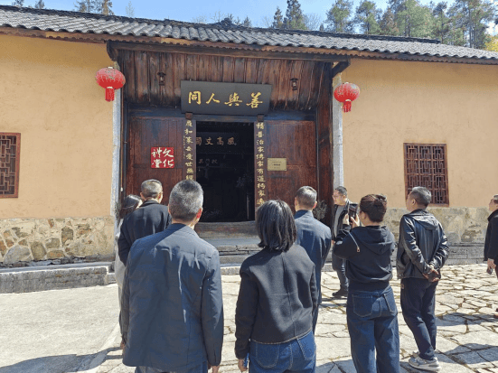

茅田善文化 · 太和街村
邱家老屋
老屋门楣上，四个字要从右往左读。邱家人讲它们的来历，先说起饥年里的一碗粥。
门前的粥棚
据邱家后人讲述，清同治年间茅田闹饥荒，邱德瀛在自家门前搭起棚子，煮粥接济乡亲。后来他被人告到官府，当年吃过他家粥的人站了出来，替他作证。
在家族流传的说法里，知府查访后为邱家题了“善与人同”。今天到老屋门前，抬头能看见的就是这四个字。施粥与题匾的经过，来自后人的讲述。
看门楣所在的完整考察照

从一家人的门前，到大家的广场
邱家后人邱代武把自家门口的地捐了出来，村里在这里建起上善广场。《湖北日报》的通讯员来访时，记下了傍晚的广场，来避暑的客人和本村人都到这里唱歌跳舞。邱家的这一块地，成了全村人都能用的地方。
老屋里又有了读书声
经过保护性修缮，老屋成了村里的文化礼堂。2022 年暑假，记者在老屋的至善书屋见到五六个孩子练毛笔字。一个即将上初中的女孩喜欢书法，听说村里开班，第一个报了名。志愿者挨个儿教，孩子们一笔一画地写。